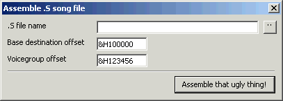

| Sappy 2006: Hacker Stuff |
If you have the MID2AGB converter, you can use it to convert most MIDI files to the Sappy engine's native format. But this is only half the procedure. The resulting .S files must be converted to binary code. This can be done with most standards-compliant assemblers, such as the one used in GCC.
Unfortunately, when using an assembler the pointers are all off and the Voice Group is undefined. We used to hand-edit the .S files in NotePad or whatever and add the intended location in ROM to all referenced pointers.
Sappy 2006 packs a built-in assembler-like tool that's custom-built for the specific purpose of converting Sappy .S files. It doesn't generate a single byte of code, only song data. But it does automatically fix the pointers, and even recognizes the header bytes when it sees them so the new song header can automatically be linked into the Song Table!
First, you must copy or rename the file musicplaydef.s to mplaydef.s. For some reason, Nintendo gave it another name than is referenced in the song files, and copies to \src with the proper name. Make sure that mplaydef.s is in the same folder as your song files.
After converting your song, picking a voicegroup offset from another song and determining where in the ROM you want to put the new one, open the assembler and fill in all three fields. The rest should be pretty much automatic.
The assembler works only because Sappy song files have certain characteristics:
.global is also the song name and therefore header label.